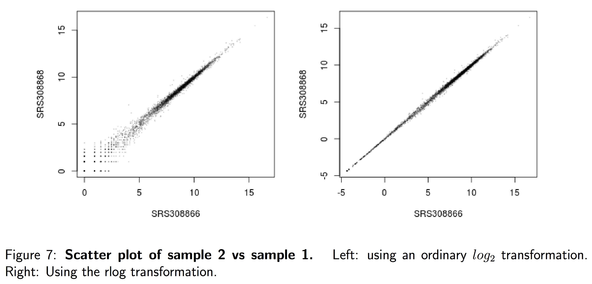
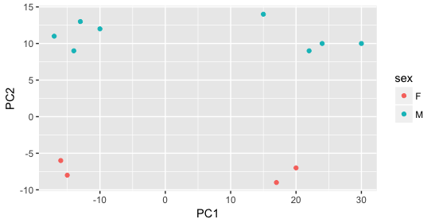

# Transform counts for data visualization
rld <- rlog(dds, blind=TRUE)QC methods for DE analysis using DESeq2
Approximate time: 80 minutes
Learning Objectives
- Recognize the importance of methods for count data transformation
- Describe the PCA (principal component analysis) technique
- Interpret different examples of PCA plots
- Evaluate sample quality using PCA and hierachical clustering
Quality Control
The next step in the DESeq2 workflow is QC, which includes sample-level and gene-level steps to perform QC checks on the count data to help us ensure that the samples/replicates look good.

Sample-level QC
A useful initial step in an RNA-seq analysis is often to assess overall similarity between samples:
- Which samples are similar to each other, which are different?
- Does this fit to the expectation from the experiment’s design?
- What are the major sources of variation in the dataset?
To explore the similarity of our samples, we will be performing sample-level QC using Principal Component Analysis (PCA) and hierarchical clustering methods. These methods/tools allow us to check how well similar the replicates are to each other (clustering) and to make sure that the experimental condition is the major source of variation in the data. Sample-level QC can also help identify any samples behaving like outliers; we can further explore any potential outliers to determine whether they need to be removed prior to DE analysis.

These unsupervised clustering methods are run using log2 transformed normalized counts. The log2 transformation improves the distances/clustering for visualization. Instead of using an ordinary log2 transform, we will be using regularized log transform (rlog), to avoid any bias from the abundance of low-count genes; Note 1 below explains this in more detail.

Image adapted from “Beginner’s guide to using the DESeq2 package” by Love, Anders, and Huber, 2014
Note 1
“Many common statistical methods for exploratory analysis of multidimensional data, especially methods for clustering and ordination (e.g., principal-component analysis and the like), work best for (at least approximately) homoskedastic data; this means that the variance of an observable quantity (i.e., here, the expression strength of a gene) does not depend on the mean. In RNA-seq data, however, variance grows with the mean. For example, if one performs PCA directly on a matrix of normalized read counts, the result typically depends only on the few most strongly expressed genes because they show the largest absolute differences between samples. A simple and often used strategy to avoid this is to take the logarithm of the normalized count values plus a small pseudocount; however, now the genes with low counts tend to dominate the results because, due to the strong Poisson noise inherent to small count values, they show the strongest relative differences between samples.
As a solution, DESeq2 offers the regularized-logarithm transformation, or rlog for short. For genes with high counts, the rlog transformation differs not much from an ordinary log2 transformation. For genes with lower counts, however, the values are shrunken towards the genes’ averages across all samples. Using an empirical Bayesian prior in the form of a ridge penality, this is done such that the rlog-transformed data are approximately homoskedastic.” - From the “Beginner’s guide to using the DESeq2 package” by Love, Anders, and Huber, 2014 (the DESeq2 vignette is the updated version of this doc).
Note
The DESeq2 vignette suggests large datasets (100s of samples) to use the variance-stabilizing transformation (vst) instead of rlog for transformation of the counts, since the rlog function might take too long to run and the vst() function is faster with similar properties to rlog.
Principal Component Analysis (PCA)
Principal Component Analysis (PCA) is a technique used to emphasize variation and bring out strong patterns in a dataset (dimensionality reduction). This is a very important technique used in the QC and analysis of both bulk and single-cell RNAseq data.
To better understand how it works, please go through this YouTube video from StatQuest that explains PCA. Alternatively, we have prepared a PCA lesson. After you have gone through the material, please proceed with the interpretation section below.
Interpreting PCA plots
Essentially, if two samples have similar levels of expression for the genes that contribute significantly to the variation represented by a given PC (Principal Component), they will be plotted close together on the axis that represents that PC. Therefore, we would expect that biological replicates to have similar scores (because our expectation is that the same genes are changing) and cluster together. This is easiest to understand by visualizing some example PCA plots.
We have an example dataset and a few associated PCA plots below to get a feel for how to interpret them. The metadata for the experiment is displayed below. The main condition of interest is treatment.

When visualizing on PC1 and PC2, we don’t see the samples separate by treatment, so we decide to explore other sources of variation present in the data. We hope that we have included all possible known sources of variation in our metadata table, and we can use these factors to color the PCA plot.
We start with the factor cage, but the cage factor does not seem to explain the variation on PC1 or PC2.

Then, we color by the sex factor, which appears to separate samples on PC2. This is good information to take note of, as we can use it downstream to account for the variation due to sex in the model and regress it out.

Next we explore the strain factor and find that it explains the variation on PC1.

It’s great that we have been able to identify the sources of variation for both PC1 and PC2. By accounting for it in our model, we should be able to detect more genes differentially expressed due to treatment.
Worrisome about this plot is that we see two samples that do not cluster with the correct strain. This would indicate a likely sample swap and should be investigated to determine whether these samples are indeed the labeled strains. If we found there was a switch, we could swap the samples in the metadata. However, if we think they are labeled correctly or are unsure, we could just remove the samples from the dataset.
Still we haven’t found if treatment is a major source of variation after strain and sex. So, we explore PC3 and PC4 to see if treatment is driving the variation represented by either of these PCs.

We find that the samples separate by treatment on PC3, and are optimistic about our DE analysis since our condition of interest, treatment, is separating on PC3 and we can regress out the variation driving PC1 and PC2.
Depending on how much variation is explained by the first few principal components, you may want to explore more (i.e., consider more components and plot pairwise combinations). Even if your samples do not separate clearly by the experimental variable, you may still get biologically relevant results from the DE analysis. If you are expecting very small effect sizes, then it’s possible the signal is drowned out by extraneous sources of variation. In situations where you can identify those sources, it is important to account for these in your model, as it provides more power to the tool for detecting DE genes.
Hierarchical Clustering Heatmap
Similar to PCA, hierarchical clustering is another, complementary, method for identifying strong patterns in a dataset and potential outliers. The heatmap displays the correlation of gene expression for all pairwise combinations of samples in the dataset. Since the majority of genes are not differentially expressed, samples generally have high correlations with each other (values higher than 0.80). Samples below 0.80 may indicate an outlier in your data and/or sample contamination.
The hierarchical tree along the axes indicates which samples are more similar to each other, i.e., cluster together. The color blocks at the top indicate substructure in the data, and you would expect to see your replicates cluster together as a block for each sample group. Our expectation would be that the samples cluster together similar to the groupings we’ve observed in the PCA plot.
In the plot below, we would be quite concerned about ‘Wt_3’ and ‘KD_3’ samples not clustering with the other replicates. We would want to explore the PCA to see if we see the same clustering of samples.

Mov10 quality assessment and exploratory analysis using DESeq2
Now that we have a good understanding of the QC steps normally employed for RNA-seq, let’s implement them for the Mov10 dataset we are going to be working with.
Transform normalized counts for the MOV10 dataset
To improve the distances/clustering for the PCA and hierarchical clustering visualization methods, we need to moderate the variance across the mean by applying the rlog transformation to the normalized counts.
Note
The rlog transformation of the normalized counts is only necessary for these visualization methods during this quality assessment. We will not be using these transformed counts for determining differential expression.
The blind=TRUE argument is to make sure that the rlog() function does not take our sample groups into account - i.e., does the transformation in an unbiased manner. When performing quality assessment, it is important to include this option. The DESeq2 vignette has more details about this.
The rlog() function returns a DESeqTransform object, another type of DESeq-specific object. The reason you don’t just get a matrix of transformed values is because all of the parameters (e.g., size factors) that went into computing the rlog transform are stored in that object. We use this object to plot the PCA and hierarchical clustering figures for quality assessment.
Note
The rlog() funtion can be a bit slow when you have > ~20 samples. In these situations the vst() function is much faster and performs a similar transformation appropriate for use with plotPCA(). It’s typically just a few seconds with vst() due to optimizations and the nature of the transformation.
Principal component analysis (PCA) for the MOV10 dataset
We are now ready for the QC steps, let’s start with PCA!
DESeq2 has a built-in function for generating PCA plots using ggplot2 under the hood. This is great because it saves us having to type out lines of code and having to fiddle with the different ggplot2 layers. In addition, it takes the rlog object as an input directly, hence saving us the trouble of extracting the relevant information from it.
The function plotPCA() requires two arguments as input: a DESeqTransform object and the “intgroup” (interesting group), i.e., the name of the column in our metadata that has information about the experimental sample groups.
# Plot PCA
plotPCA(rld, intgroup="sampletype")
Exercise
- What does the above plot tell you about the similarity of samples?
- Does it fit the expectation from the experimental design?
- What do you think the %variance information (in the axes titles) tell you about the data in the context of the PCA?
By default plotPCA() uses the top 500 most variable genes. You can change this by adding the ntop= argument and specifying how many of the genes you want the function to consider.
Note
The plotPCA() function will only return the values for PC1 and PC2. If you would like to explore the additional PCs in your data or if you would like to identify genes that contribute most to the PCs, you can use the prcomp() function. For example, to plot any of the PCs we could run the following code:
# Input is a matrix of log transformed values
rld <- rlog(dds, blind=T)
rld_mat <- assay(rld)
pca <- prcomp(t(rld_mat))
# Create data frame with metadata and PC3 and PC4 values for input to ggplot
df <- cbind(meta, pca$x)
ggplot(df) + geom_point(aes(x=PC3, y=PC4, color = sampletype))
Resources are available to learn how to do more complex inquiries using the PCs.
Hierarchical Clustering for the MOV10 dataset
There is no built-in function in DESeq2 for plotting the heatmap for displaying the pairwise correlation between all the samples and the hierarchical clustering information; we will use the pheatmap() function from the pheatmap package. This function cannot use the DESeqTransform object as input, but requires a matrix or dataframe. So, the first thing to do is retrieve that information from the rld object using a function called assay() (from the SummarizedExperiment package) that converts the data in a DESeqTransform object to a simple 2-dimensional data structure (a matrix in this case).
# Extract the rlog matrix from the object
# "assay()" is part of the "SummarizedExperiment" package, which is a DESeq2 dependency and is loaded with the DESeq2 library
rld_mat <- assay(rld)Next, we need to compute the pairwise correlation values for all the samples. We can do this using the cor() function:
# Compute pairwise correlation values
# cor() is a base R function
rld_cor <- cor(rld_mat)Let’s take a look at the column and row names of the correlation matrix.
# Check the output of cor(), make note of the row names and column names
head(rld_cor) Irrel_kd_1 Irrel_kd_2 Irrel_kd_3 Mov10_kd_2 Mov10_kd_3 Mov10_oe_1
Irrel_kd_1 1.0000000 0.9997740 0.9997525 0.9996005 0.9996334 0.9995372
Irrel_kd_2 0.9997740 1.0000000 0.9997564 0.9995701 0.9996137 0.9995441
Irrel_kd_3 0.9997525 0.9997564 1.0000000 0.9995460 0.9996014 0.9995541
Mov10_kd_2 0.9996005 0.9995701 0.9995460 1.0000000 0.9997927 0.9993895
Mov10_kd_3 0.9996334 0.9996137 0.9996014 0.9997927 1.0000000 0.9994757
Mov10_oe_1 0.9995372 0.9995441 0.9995541 0.9993895 0.9994757 1.0000000
Mov10_oe_2 Mov10_oe_3
Irrel_kd_1 0.9995326 0.9994112
Irrel_kd_2 0.9995407 0.9994279
Irrel_kd_3 0.9995620 0.9994254
Mov10_kd_2 0.9993608 0.9992364
Mov10_kd_3 0.9994457 0.9993479
Mov10_oe_1 0.9997794 0.9996902head(meta) sampletype
Irrel_kd_1 control
Irrel_kd_2 control
Irrel_kd_3 control
Mov10_kd_2 MOV10_knockdown
Mov10_kd_3 MOV10_knockdown
Mov10_oe_1 MOV10_overexpressionYou will notice that they match the names we have given our samples in the metadata data frame we started with. It is important that these match, so we can use the annotation argument below to plot a color block across the top. This block enables easy visualization of the hierarchical clustering.
Let’s plot the heatmap!
When you plot using pheatmap(), the hierarchical clustering information is used to place similar samples together and this information is represented by the tree structure along the axes. The annotation argument accepts a dataframe as input; in our case it is the meta dataframe.
# Load pheatmap package
library(pheatmap)
# Plot heatmap using the correlation matrix and the metadata object
pheatmap(rld_cor, annotation = meta)
Overall, we observe pretty high correlations across the board (> 0.999) suggesting no outlying sample(s). Also, similar to the PCA plot, you see the samples clustering together by sample group. Together, these plots suggest to us that the data are of good quality and we have the green light to proceed to differential expression analysis.
Note
The pheatmap function has a number of different arguments that we can alter from default values to enhance the aesthetics of the plot. If you are curious and want to explore more, try running the code below. How does your plot change? Take a look through the help pages (?pheatmap) and identify what each of the added arguments is contributing to the plot.
heat.colors <- RColorBrewer::brewer.pal(6, "Blues")
pheatmap(rld_cor, annotation = meta, color = heat.colors,
border_color = NA, fontsize = 10, fontsize_row = 10, height=20)
Curious about all of the available color palettes offered by the RColorBrewer package? Try typing in your console display.brewer.all() and see what happens!